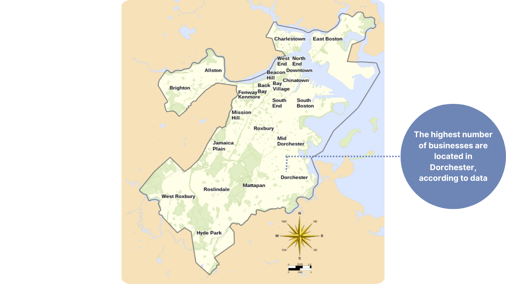

She Means Business: Exploring Boston's Women-driven Enterprises

Exploring the landscape of women-owned businesses in Boston, this project dives into data from Women Entrepreneurs Boston (WE BOS), showcasing their spread, online presence, and diverse ownership.
Nearly 40% of Boston's Women-Owned Businesses Focus on Professional, Scientific, and Technical Services

Neighborhood with the Most Packed Business Scene


8 out of 10 women-owned businesses in Boston are already rocking the online world. That means more customers are finding them, and their businesses are growing. Just sayin', if you're a business owner, having an online presence these days is kind of a big deal.